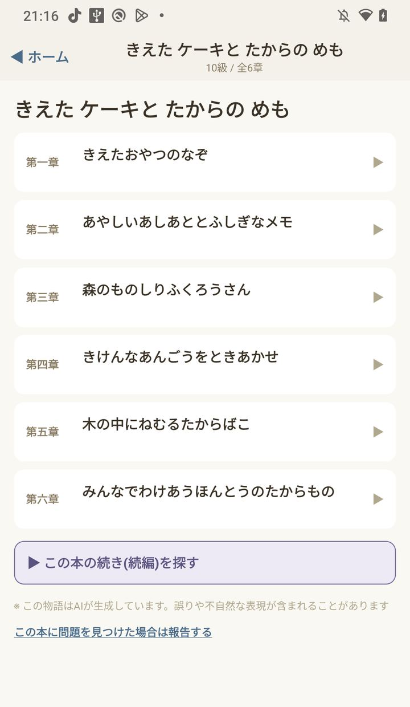
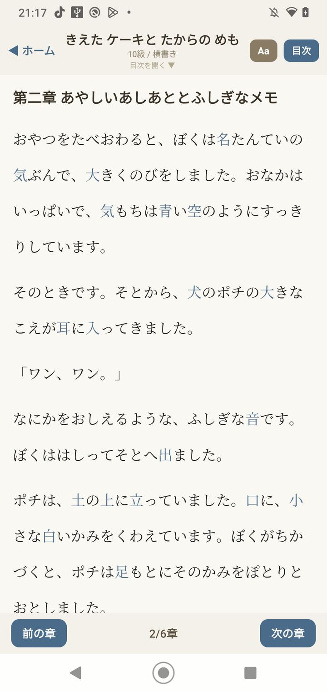

不思議の図書館
漢字読み学習
テスト中漢字のレベルに合わせて小説を読むアプリです。学年や級を選ぶと、その範囲で書かれた話が出てきます。

館に入った画面です。本を探す、本を読む、話す、漢字の記録、本の共有から進みます。案内役が、今日はどんな本を探すかと聞いてきます。

10級の本を開いたところです。章の題はひらがなが中心で、全6章あります。下には、この本の続きを探すボタンと、文章がAIで作られているという注意が出ています。

本文です。上に「10級 / 横書き」と出ていて、文はひらがな中心、一部の漢字だけが青字です。右上の Aa で文字の大きさを変え、下のボタンで前の章と次の章に移ります。
読める漢字で、読める本を
学年や漢字の級を選ぶと、その範囲の漢字で書かれた物語が出てきます。級は10級から1級まであり、「指定なし」も選べます。低い級ではひらがなが多く、上がるほど漢字が増えます。
できること
- 漢字をタップすると読みが出ます。単語の意味も調べられます。
- 縦書きと横書き、文字の大きさを切り替えられます。
- 読んだ漢字は「漢字の記録」に残ります。選んだ級の漢字一覧と見比べられます。
- 館の案内役と話せます。案内役は変えられます。
- できた本は、近くの端末へ Bluetooth や Wi-Fi で直接渡せます。
こんな人に
- 漢字の練習を、ドリルではなく読書でしたい
- 級に合わせて、読める漢字を少しずつ増やしたい
- 日本語を学んでいて、知っている漢字の範囲で物語を読みたい
物語、単語の意味、案内役の会話は、AI が書きます。生成には、自分で取った Gemini の API キーを使います。メモリが8GB以上の端末では、端末の中で生成する方法も選べます。AI の文章には、誤りや不自然な表現が混ざることがあります。
よくある質問
まだ習っていない漢字は出てきますか
出てきません。選んだ学年や級までの漢字で書かれ、それより先の漢字はひらがなになります。読めない漢字は、タップすると読みが出ます。タップした漢字は記録され、次に作る本で多めに使われます。
文章は誰が書いていますか
本を開くと、文章がAIで作られているという注意が出ます。